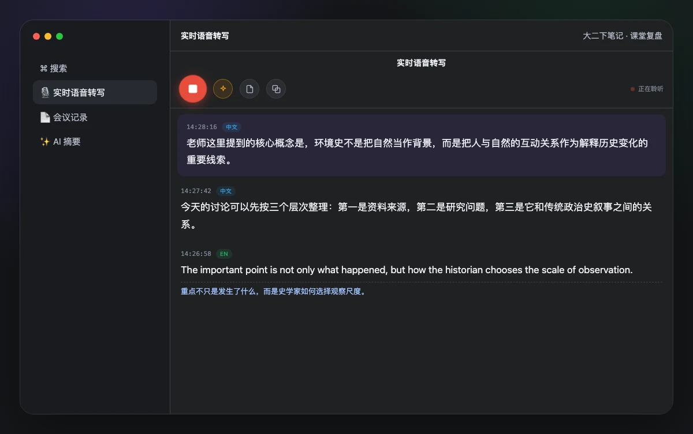
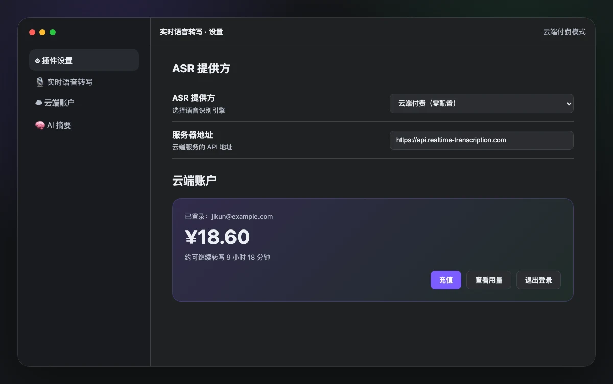
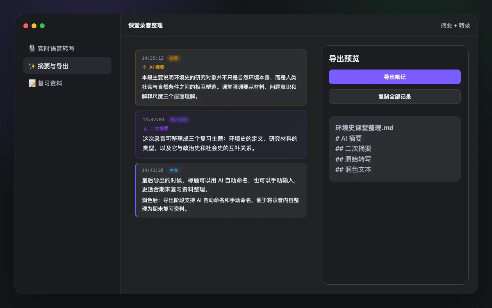

实时字幕不是终点，结构化笔记才是
16kHz 单声道采集、partial 稳定过滤、final 聚合输出，减少重复和回滚，让长时间录音保持可读。
本地模型免费跑，云端模式零配置。会议、课堂、访谈和灵感记录，边说边进库。

16kHz 单声道采集、partial 稳定过滤、final 聚合输出，减少重复和回滚，让长时间录音保持可读。

云端付费模式免模型、免密钥、免后端进程管理。按实际使用时长结算，余额不足时自动提示充值。

自动翻译、AI 摘要、二次摘要和手动/AI 命名导出，适合课堂、访谈、会议纪要和资料整理。
SenseVoice-Small + sherpa-onnx 可离线运行。敏感会议、私密笔记和低延迟场景继续走本机。
不需要长期订阅，云端 ASR 按小时计费。注册送体验额度，之后按余额扣费。
翻译、润色、摘要都使用 OpenAI 兼容接口，DeepSeek、通义等模型可以直接接入。
历史记录、转写卡片、导出文件和设置面板都在 Obsidian 内完成，不额外维护另一个知识库。
课堂、采访、会议、播客草稿、个人复盘，一套插件覆盖从录音到整理的日常链路。
你可以一直使用本地模型。付费只用于零配置云端 ASR 和托管识别成本。
安装插件后打开设置，选择“云端付费（零配置）”，注册或登录账户，再点击充值。支付完成后余额会在插件中显示。